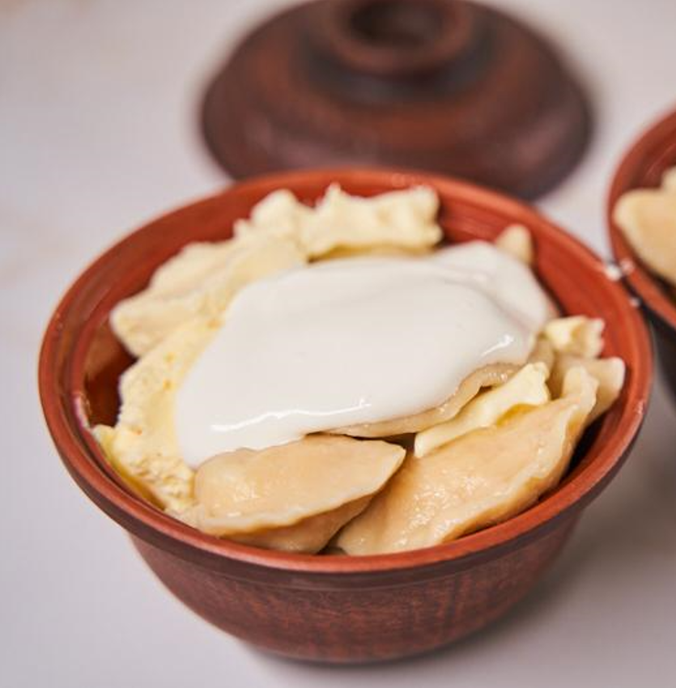

Вареники

Опис
Вареники — українська національна страва у вигляді відвареного прісного тіста і начинки з картоплі, м'яса,
грибів, овочів, фруктів, ягід та сиру. Вареники — один із символів української національної кухні.
Про вареники треба не говорити, не писати й не читати, це страва, котру було створено, щоб їсти, молитися на неї
й любити всім серцем.
Інгрідієнти
Для тіста:
- 400 г борошна + 50 г для підпилу
- 1 яйце
- 200 г води
- Дрібка солі
Для начинки:
- 300 г кисломолочного сиру
- 3 ст. л. цукру чи медуу
- 250 г сметани
- 100 г вершкового масла
Приготування
- У великій мисці змішайте 400 г борошна, 1 яйце, 200 мл води та дрібку солі. Спершу
перемішайте ложкою чи лопаткою, а потім, припилюючи суміш і тарілку, вимішайте еластичне тісто на вареники.
Сформуйте з нього кулю та дайте відпочити 10-15 хвилин. У цей час змішайте 300 г сиру з 3 ст. л. цукру чи
меду. Сир перетирати не варто, щоб зберегти його приємну текстуру.
- Увімкніть духовку розігріватися до 180 градусів. Припиліть поверхню борошном і розкачайте
тісто в тонкий пласт товщиною буквально пару міліметрів.
- За допомогою стакана чи спеціальної круглої форми виріжте кружечки та почніть ліпити вареники.
- В один вареник кладіть приблизно столову ложку начинки без верху. Обрізки тіста зберіть,
знову сформуйте в кулю, розкачайте і використайте все до кінця.
- У сотейнику чи каструлі закип’ятіть воду, підсоліть її та киньте вареники. Як тільки вони спливуть,
діставайте з води, щоб не переварити. Перекладіть вареники в горщики, перекладаючи між ними масло,
по 50 г на один горщик. Потім залийте вареники сметаною по 100-125 г на горщик, закрийте кришкою та
відправляйте в духовку на 20 хвилин.
- Подавайте гарячими. Можна їсти прямо із горщика чи розкласти по тарілках.